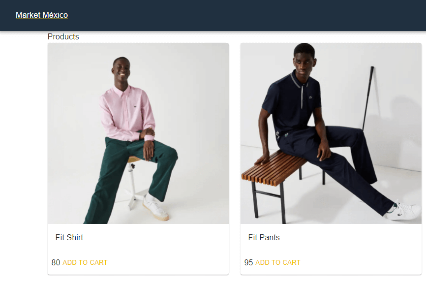

Este proyecto es una aplicación web para registrar el inventario de una tienda de
libros. Al entrar a la página se le pide al usuario autenticarse, si no está registrado
se le da la opción de crear un usuario. Al autenticarse se muestran el catalogo de
libros registrados y la opción de agregar más libros.
Esta aplicación está construida con Next.js + Tailwind CSS por el lado del cliente, y
Node.js y base de datos MySQL por el lado del servidor.
Ir al
proyecto

Este proyecto es una tienda online. Al ingresar a la página se le muestran los productos
con los que dispone la tienda, selecciona los que quiere comprar y es direccionado a
pagar, para seguir con el proceso es necesario que el usuario esté registrado. Si no
está registrado se le da esta opción. Al usuario se le pide introducir sus datos y el
método de pago. En su perfil se encuentra la información de todos sus pedidos.
Esta aplicación está construida con Next.js + Tailwind CSS por el lado del cliente, y
Node.js y la base de datos MongoDB por el lado del servidor.
Ir al
proyecto
Este proyecto lo hice como parte del curso de Udemy "React Avanzado: Fullstack Next.js,
Apollo, MongoDB y GraphQL". Es un CMR (Gestión de Relaciones con el Cliente) en donde te
podrás registrar como usuario y después acceder a la aplicación. En el CRM puedes
ingresar nuevos clientes, pedidos, productos; y también ver el resumen de toda la
información que ingresaste. Además la aplicación web cuenta con secciones para mejores
vendedores y mejores clientes, por medio de gráficas se visualiza la información de
estos apartados.
Ir al
proyecto
Esta aplicación web esta hecha con React, imita las características de una tienda
online. Solo que en lugar
de vender productos se venden pokemons, esto es con el fin de usar la API de Pokemon.
El usuario puede agregar a la cesta los pokemons que quiera comprar, ver detalle de cada
pokemon, consultar su compra y quitar pokemons de la cesta. También puede registrarse y
hacer login, por el
momento no se tiene una base de datos que permita realizar estas dos funciones. En la
aplicación uso el
paquete zustand para manejar datos globales.
Ir al proyecto
Este es el primer proyecto del curso Desarrollo Web Completo que estoy tomando
del sitio de aprendizaje Udemy. La página web tiene una estructura basada en CSS grid
y Flexbox, y además es responsive, adaptable a dispositivos móviles, tablets y laptops.
Ir al proyecto
© Untitled. All rights reserved. | Design:
HTML5 UP